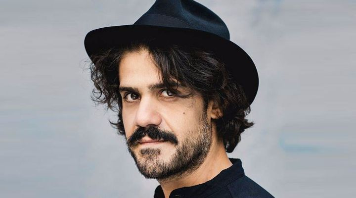
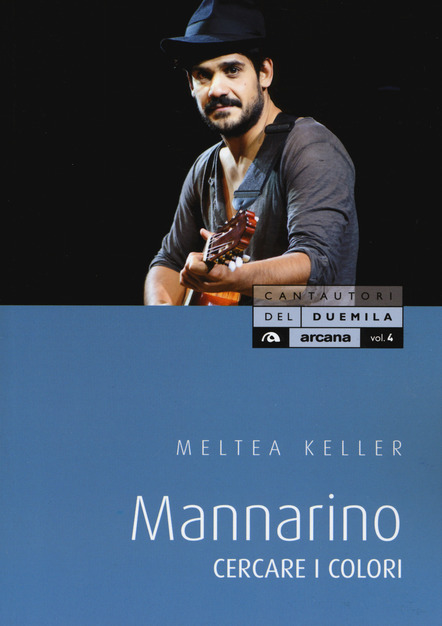
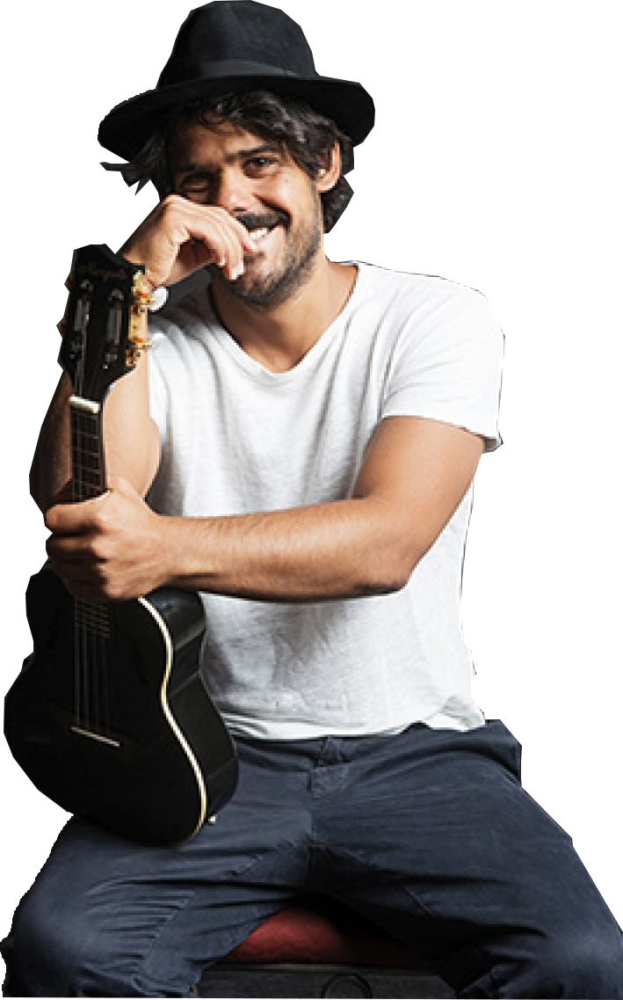

Mannarino
Chi è?

Alessandro Mannarino, in arte Mannarino, è un cantautore nato a Roma il 23 agosto del 1979. Come Fabrizio Moro è nato a San Basilio da genitori di origine calabrese. Inizia l'attivitá artistica nel 2001, esibendosi presso il rione Monti con originali spettacoli, a metá strada tra l'attivitá DJ-istica ed il concerto acustico.
Vita privata e curiositá

Il cantautore è single. Durante la sua vita, peró, come lui stesso ha dichiarato, ha avuto tanti incontri, cosí come tante storie.
In controtendenza rispetto agli artisti contemporanei, Mannarino non ha neanche un tatuaggio sul suo corpo.
Il primo marzo 2018 Arcana ha dedicato a Mannarino una monografia parte della collana "I cantautori del XXI secolo". Il libro, scritto da Meltea Keller, si chiama "Cercare i colori". Il titolo deriva da una dichiarazione dell'autore a proposito della genesi dell'ultimo album in studio, "Apriti cielo".
L’arresto
Nel giugno 2014 Mannarino è stato arrestato per resistenza a pubblico ufficiale dopo una rissa in un locale del lungomare di Ostia dove la sorella, che stava festeggiando il suo compleanno in una festa a tema hawaiano, è stata importunata. Come ha confessato, il cantautore si è trovato in una situazione simile a quelle che racconta nelle sue canzoni, dove lascia spazio a storie di carcerati, arrabbiati e disillusi.
Di conseguenza, nel febbraio 2016 è stato condannato a un anno e sei mesi di carcere, con la condizionale, per resistenza e lesioni a pubblico ufficiale.
Il rapporto con San Basilio

Originario anche lui del quartiere del nord-est di Roma, nella puntata su San Basilio di Eroi di Strada parla del quartiere come un ambiente in cui cresci piú sveglio e "ti arriva una botta di violenza" nel periodo dell’adolescenza che ti stimola a "lottare" giá in giovane etá.
Spiega, inoltre, un aneddoto significativo che riguarda i primi giorni di approdo al Liceo: due professori dopo averlo preso in disparte si prendono gioco di lui solo per il fatto che fosse originario di San Basilio. Continua dicendo, però, che questo non fu altro che uno stimolo a reagire subito e a diplomarsi in pari, mentre giá cantava e viveva la sua vita a pieno.